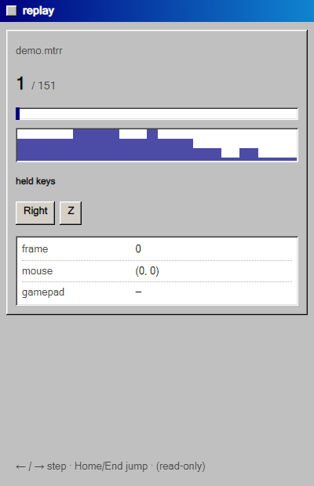

// features — 機能リファレンス
機能リファレンス
MitiruEngine でできることを、コピペできるコード付きで並べた逆引きの一覧です。「丸を描きたい」「パッドを読みたい」「音を鳴らしたい」——やりたいことから探してください。触る相手は基本 3 つ、update(Input in, Hud hud, float dt) の in と hud、draw(Screen& s) の s だけです。座標は左上が (0, 0)、標準の画面は 1280 × 720。長さの単位はピクセル、角度は関数により度（deg）かラジアン（rad）——各節に明記します。まだ何も作っていなければ、先に はじめてのゲーム で土台を作ると読みやすくなります。
ゲームの骨組み — struct / update / draw
ゲームの状態を 1 つの struct に持ち、update で動かし、draw で描く。最後に MITIRU_GAME を 1 行。これだけで動きます。
#include <mitiru/module/Game.hpp> using namespace mitiru; struct MyGame { float x = 640; // 状態はここに置くだけ（ホストが保持する） void init() { x = 640; } // 起動時に 1 回（任意） void update(Input in, float dt) { // 毎フレーム。dt = 前フレームからの経過秒 if (in.down(Key::Right)) x += 320 * dt; } void draw(Screen& s) { // 毎フレーム。画面に描く s.fillScreen(color::Black); s.drawRectCentered(x, 360, 48, 48, color::Cyan); } }; MITIRU_GAME(MyGame) // これ 1 行で DLL の入口が出来る
init / update / draw はすべて任意——書いたものだけ呼ばれます。update は欲しい引数だけ受け取れます（使わないものは省略可）。
- void update(Input in, float dt)入力だけ要るとき（いちばん多い）
- void update(Input in, Hud hud, float dt)音・HTML UI・道具も使うとき
- void update(float dt)時間だけで動かすとき
- void draw(Screen& s)描画
なぜ struct か。 エンジンはこのゲーム状態をまるごとコピーして保存／復元します（ホットリロード・タイムトラベル・録画）。だからトップの状態は「ただのデータ」——仮想関数やポインタを持たない flat POD——である必要があります（守られているか MITIRU_GAME がコンパイル時に確認）。可変長は mitiru::FixedVec<T,N> を使い、中で使う部品（敵・弾など）は普通に class で書いて構いません。トップだけ素直に保つ住み分けです（→ ⑨ AI Lens と決定論）。
図形を描く — 四角・円・線・多角形
いちばんよく使う図形は、座標を直接渡すだけで描けます（初心者向けの簡単版）。下は実際の描画結果です。


void draw(Screen& s) { s.fillScreen(hex(0x14182A)); // 背景をひと色で塗る s.drawRect(40, 40, 120, 80, color::Red); // (x, y) 左上から w×h の四角 s.drawRectCentered(640, 360, 100, 100, color::Blue); // (cx, cy) 中心の四角 s.fillCircle(900, 200, 48, color::Yellow); // (cx, cy) 中心・半径 r の円 s.line(0, 0, 1280, 720, color::White, 3); // (x0,y0)-(x1,y1) の線（太さ 3） }
もっと種類が要るときは、矩形を sgc::Rectf{x, y, w, h}、座標を sgc::Vec2f{x, y} で渡します。下はすべて Screen のメソッドです。
- s.drawRectFrame({x,y,w,h}, col, 2)四角の枠線（太さ指定）
- s.drawRoundedRect({x,y,w,h}, col, 8)角丸四角（半径 8）。枠版
drawRoundedRectFrame - s.drawCircle({cx,cy}, r, col)円。枠版
drawCircleFrame - s.drawEllipse({cx,cy}, rx, ry, col)楕円
- s.drawRing({cx,cy}, outer, inner, col)リング（ドーナツ）
- s.drawArc({cx,cy}, r, a0, a1, col, 2)円弧（角度は rad、0 = 右）
- s.drawPie({cx,cy}, r, a0, a1, col)扇形（rad）
- s.drawTriangle(p0, p1, p2, col)塗り三角形（p は Vec2f）
- s.drawPolygon(points, col)凸多角形（
std::vector<sgc::Vec2f>） - s.drawRectRotated({x,y,w,h}, col, deg)回転した四角（角度は度）
- s.drawGradientRect({x,y,w,h}, top, bottom)上→下グラデ。横版
drawGradientRectH、4 隅版drawGradientRect4 - s.drawRectPattern(rect, type, cell, c1, c2)市松・ストライプ・ドット（
Screen::PatternType） - s.drawDashedLine(from, to, th, dash, gap, col)破線
sgc::Rectf と sgc::Vec2f とは。 エンジンが使う「矩形」と「2D 座標」の型です。sgc::Rectf{x, y, 幅, 高さ}、sgc::Vec2f{x, y} と波かっこで作るだけ。#include <mitiru/module/Game.hpp> で一緒に使えるようになります。当たり判定にも同じ Rectf を使います（→ ⑭ 当たり判定）。
色 — 色の書き方
色は 0–255・16 進・名前で作れます。型はすべて mitiru::Color。
rgb(200, 0, 44) // 0–255 の RGB（不透明） rgba(255, 255, 0, 128) // RGBA（a=0 透明 … 255 不透明）= 半透明の黄 hex(0xC8002C) // 6 桁 16 進 0xRRGGBB hexa(0xC8002C80) // 8 桁 16 進 0xRRGGBBAA（alpha 込み） color::White color::Black color::Gray color::Red color::Green color::Blue color::Yellow color::Orange color::Cyan color::Clear // 名前付き
半透明にしたいときは Color c = color::Red; c.a = 0.3f; のように .a（0.0–1.0）を下げます。重ね塗りや残像・影に便利です。
文字を描く — テキスト
いちばん簡単なのは s.text(...)。枠に収めて整列したいときは drawTextInRect を使います（はみ出しは自動で … に省略され、レイアウトが崩れません）。

s.text / drawTextOutlined（縁取り）/ drawTextWithShadow（影）の実描画。s.text(/* str */ "SCORE " + std::to_string(score), 24, 20, color::White, 24); // (文字, x, y, 色, 大きさ) // 枠 {x,y,w,h} の中で中央寄せ。alignH / alignV で位置を選ぶ。 s.drawTextInRect({0, 320, 1280, 80}, "GAME OVER", color::White, 48, Screen::TextAlignH::Center, Screen::TextAlignV::Middle);
- s.drawTextWrapped(rect, str, col, size)枠の幅で単語折り返し（説明文・セリフ）
- s.drawTextClipped(rect, str, col, size)1 行・はみ出しは
…に省略 - s.drawTextWithShadow(rect, str, col, size, shadowCol)影付き
- s.drawTextOutlined(rect, str, col, outlineCol)縁取り（背景に埋もれない見出し）
- s.drawTextBold(rect, str, col, size)擬似ボールド
- s.measureText(str, size)描画サイズを計測（
{幅, 高さ}。中央寄せの自前計算に）
凝った文字は HTML/CSS が得意。 スコア表示やメニューのような UI 文字は、C++ で描くより HTML / CSS の HUD にしたほうが、フォント・影・アニメを自由に付けられます。ゲーム世界の中に出す文字（ダメージ数値など）は C++ で、UI の文字は HTML で——と使い分けるのがおすすめです。
移動・回転・拡大 — 座標変換
一時的に座標系をずらす／回す／拡大すると、同じ描画コードを使い回せます。push… と popTransform() は必ずペアで。

drawRectRotated で少しずつ回して重ねたもの（pushRotation でも同じ）。s.pushTransform(camX, camY); // 平行移動（カメラのスクロールに） drawWorld(s); // この中の描画はすべて camX,camY ずれる s.popTransform(); // (cx, cy) を中心に rad だけ回す s.pushRotation(angleRad, cx, cy); s.drawRectCentered(cx, cy, 60, 60, color::Orange); s.popTransform(); // グループ描画: 位置 + 回転（度）をまとめて適用。中はローカル座標で描く。 s.drawGroup({px, py}, spinDeg, [&](Screen& g) { g.drawRectCentered(0, 0, 40, 40, color::Cyan); // 原点 = (px, py) });
pushTransform(tx, ty, sx, sy) なら拡大縮小も同時に。複数 push は重ねられます（最後に積んだものが先に効く）。必ず同じ数だけ popTransform() してください。
画像・スプライト — 画像を描く
画像は Texture に読み込んで drawSprite で描きます。読み込みは重いので init() で 1 回だけ——draw() の中で毎フレーム読み込まないこと。
drawSprite（テクスチャ）/ ティント乗算 / スプライトシートの 1 コマ切り出し / drawPixelGrid（手続き生成ピクセル）。#include <mitiru/render/Texture.hpp> struct MyGame { render::Texture tex; void init() { if (auto t = render::Texture::fromFile("player.png")) tex = std::move(*t); } void draw(Screen& s) { s.drawSprite(tex, {x, y, 64, 64}); // 描画先の矩形に貼る s.drawSprite(tex, {x, y, 64, 64}, color::Red); // 色を乗算（点滅・ダメージ表現） // スプライトシートの 1 コマを切り出す: src は元画像内のピクセル矩形、flipX で左右反転 s.drawSprite(tex, {x, y, 64, 64}, {32.0f * frame, 0, 32, 32}, color::White, facingLeft); } };
render::Texture には solid(w,h,col)（単色）や checker(...)（市松）もあり、画像が無くても試せます。ピクセルを自前で作って表示したいときは s.drawPixelGrid({x,y,w,h}, pixels, pw, ph)——RGBA8 のバッファをそのまま 1 枚の絵として描けます（自作ラスタライザや手続き的生成向け）。
flat POD と画像の両立。 Texture をトップの struct のメンバに持つと flat POD ではなくなり、MITIRU_GAME がコンパイルエラーにします（録画・タイムトラベルの単一 state を守るため → ⑨ AI Lens と決定論）。画像はグローバル／別オブジェクトに分け、トップの struct には座標やフレーム番号など「数値だけ」を残します。
キーボード・マウス — 入力を読む（Input）
in から読みます。「押している間」と「押した瞬間」は別メソッドです——移動は down、ジャンプや決定は pressed。
void update(Input in, float dt) { if (in.down(Key::Left)) x -= 320 * dt; // 押されている間ずっと true if (in.pressed(Key::Space)) jump(); // 押した瞬間だけ true if (in.released(Key::Z)) release(); // 離した瞬間だけ true float mx = in.mouseX(), my = in.mouseY(); if (in.mousePressed(0)) shootAt(mx, my); // 0=左 1=右 2=中 }
キーは Key::Left / Up / Right / Down / Space / Enter / Escape / Shift / A…Z / Num0…Num9 / F1…F12 など名前で。一覧に無いキーも Key{0x..}（Windows 仮想キーコード）で渡せます。マウスは mouseDown / mousePressed / mouseReleased。
HTML のボタンから届いた合図は in.action("name") でそのフレームだけ true（→ ⑫ HTML / CSS で画面・画面を作る）。値付きなら in.actionPayload("name")。
ゲームパッド — コントローラ
XInput 対応パッド（Xbox 系）に対応しています。つながっていれば in から読めます。
void update(Input in, float dt) { if (!in.padConnected()) return; if (in.padPressed(Pad::A)) jump(); // down / pressed / released + Pad::A B X Y LB RB Start … Stick l = in.leftStick(); // 各成分 -1.0 … 1.0 x += l.x * 320 * dt; float rt = in.rightTrigger(); // 0.0 … 1.0（leftTrigger も） }
ボタンは Pad::Up/Down/Left/Right/Start/Back/A/B/X/Y/LB/RB/LStick/RStick。スティックは leftStick() / rightStick()（{x, y}）、トリガーは leftTrigger() / rightTrigger()。
乱数・決定論・AI Lens — 1 個の flat POD から生える
乱数は mitiru::Random で。毎フレーム同じ入力なら必ず同じ結果（決定論）になるよう、種を in.rngSeed() から取ると、プレイを録画して完全に再現できます。
#include <mitiru/core/Random.hpp> Random rng(in.rngSeed()); // 録画リプレイで bit-exact に再現したいときは種をここから int dmg = rng.nextInt(10, 50); // 10〜50 の整数 float angle = rng.nextFloat(0, 6.28f); bool crit = rng.nextBool(0.15f); // 15% で true
flat POD という 1 つの制約
ゲーム状態（トップの struct）は flat POD 必須です——std::vector / std::string の代わりに mitiru::FixedVec<T,N> / FixedString<N> を使います。MITIRU_GAME(MyGame) がこれをコンパイル時に確認するので、うっかりポインタを混ぜたらその場でエラーになり、録画・タイムトラベルから黙って外れることがありません。状態が 1 個の平坦な構造体に収まっているからこそ、本来は別々に作り込む重い機能が、同じ memcpy と記述子から追加コストなしで生えてきます。
- 入力と種を記録同じプレイを bit-exact に再生。リプレイがそのまま回帰テストに（
mitiru run --record/mitiru replay） - 毎フレームの状態を記録過去フレームへ巻き戻して「なぜ HP が 50 になった」を原因の 1 行まで追える（→ ⑬ の
timetravel） - MITIRU_REFLECT で宣言同じ flat POD を構造化 JSON として外から読める（下記 AI Lens）
AI Lens — 同じ flat POD から、AI も全状態を読める
フィールドを MITIRU_REFLECT(MyGame, player, enemies, hp) と宣言すると、エンジンが GameMemory を構造化 JSON にします。MITIRU_AI=1 mitiru run で localhost API が立ち、現在・差分・反実仮想を叩けます。巻き戻し・録画とまったく同じ 1 つの flat POD から、AI 可視化まで生えています。
// ゲーム状態のフィールドを宣言するだけ（コードの追加はこれだけ）
MITIRU_REFLECT(MyGame, player, enemies, hp);
# AI 用 API を立てて起動（zero-config）
MITIRU_AI=1 mitiru run
- GET /api/ai/state現在の全状態を構造化 JSON で（
player/enemies/hp…） - GET /api/ai/diffフレーム間で何が変わったかの差分
- POST /api/ai/branch反実仮想——「この入力を続けたら?」を live を壊さず試行
1 つの設計判断が差別化の土台になっている。 状態を 1 個の flat POD に置くという制約が、巻き戻し・録画リプレイ・AI 可視化という別々の機能を、追加コストなしで同じ仕組みから生やしています。詳しい思想は トップの「状態は 1 個の flat POD」 へ。
音 — 効果音・BGM
音は hud から id で鳴らします（鳴らしたい瞬間に呼ぶだけ）。update(Input in, Hud hud, float dt) の形にして:
hud.play("hit"); // id で鳴らす hud.play("bgm", 0.6f); // 第 2 引数は音量（0.0 … 1.0）
id（"hit" など）は、プロジェクトの音声アセットに対応づけられます。再生中の音や全体音量は ⑬ デバッグ窓 の mixer 窓で確認できます。

mixer 窓 — マスター音量と再生中チャンネルの VU。手応えの演出 — フラッシュ・画面揺れ・スクショ
操作の「手応え」は hud の一発エフェクトと、draw 側のちょっとした工夫で足せます。
hud.flash(color::White, 0.18f); // 画面を一瞬その色にフラッシュ（被弾・ボス登場） hud.screenshot(); // その瞬間の画面を画像保存（if (over) hud.screenshot(); など）
画面揺れ（スクリーンシェイク）
描画位置を少しだけ揺らすのが定番です。状態に float shake; を持ち、被弾で shake = 1.0f、毎フレーム減衰させて、draw で全体をオフセットします。
// update: 被弾したら shake = 1.0f; 毎フレーム減らす if (shake > 0) shake = std::max(0.0f, shake - dt * 2.6f); // draw: 揺れ分だけ全部ずらして描く float ox = std::sin(frame * 1.7f) * shake * 8.0f; float oy = std::cos(frame * 2.3f) * shake * 8.0f; s.drawRectCentered(px + ox, py + oy, 40, 40, color::White);
パーティクル（粒子）も「位置・速度・寿命を持つ小さな四角の配列を update で進めて draw で描く」だけ。寿命が尽きたら alive=false にして枠を再利用すれば、確保しっぱなしで軽く回せます。
HTML / CSS で画面 — HUD・メニューを Web で
スコア表示・メニュー・ダイアログは、C++ で描くより HTML / CSS が得意です。C++ は値を「送る」だけ、HTML 側は data-m-* 属性で「受け取る」だけ——つなぎの JavaScript は不要です。
// C++: 名前を付けて値を送る hud.set("view.hud.score", score); // int / float / bool / const char* に対応 hud.set("view.boss.active", true);
<!-- HTML: 同じ名前を指すだけ（scene.html）--> <div class="hud">SCORE <span data-m-text="view.hud.score">0</span></div> <div class="boss" data-m-show="view.boss.active">…</div>
ボタンの click は data-m-action="restart" → C++ 側で in.action("restart") で受けます。data-m-text / tpl / show / class / style / repeat … の全ボキャブラリと作例は 画面を作る に。観察用の値を inspector 窓へ送るなら hud.watch("game", "Dodge", json)、どうしても生 JS が要るときの逃げ道は hud.runJs(code)。
サンプルで動きを見たいとき。 ゲーム本体は C++、HUD は HTML / CSS という構成は、同梱の timetravel_demo など各サンプルでそのまま確認できます。mitiru new で作るひな型も最初からこの形です。
デバッグ窓 — 必要な道具だけ、別ウィンドウで
巨大なエディタは開きません。fps を見たい・状態を覗きたい——欲しい道具だけを小さな独立ウィンドウで開きます。ゲーム画面は汚れず、スクショに余計なものが映りません。どれも HTML/CSS で出来た別ウィンドウです。

Perf — fps / フレーム時間
Inspector — 観察データ一覧
TimeTravel — 巻き戻し
Replay — 録画再生
SceneTree — 階層ツリーAudioMixer — 音量・VUhud.open(Tool::Perf); // 開きたい所に 1 行（何度呼んでも 1 回だけ開く） if (over) hud.open(Tool::Inspector); // 条件付きでも OK
- Tool::Perffps / フレーム時間。重くなっていないか
- Tool::Inspector
hud.watch(...)で送った値を一覧 - Tool::TimeTravel過去フレームへ巻き戻して状態の推移を見る
- Tool::Replay録画（.mtrr）をフレーム単位で再生
- Tool::SceneTree観察データの階層構造をツリー表示
- Tool::AudioMixer音量・再生中チャンネルの VU
- Tool::InputMonitor入力の生値モニタ
コードを変えずに一時的に覗くだけなら、起動時に mitiru run --inspect perf。普段はコードから（どの窓を使うか残って分かりやすい）、ちょい見はコマンド、と使い分けます。これらの窓自体もすべて HTML/CSS で出来ています。
当たり判定 — 矩形の交差・点の内包
四角どうしが重なったか・点が四角の中にあるかは、自分で座標を比べなくても sgc::Rectf のメソッドで一発です。
sgc::Rectf player{playerX - 28, 660, 56, 24}; // {x, y, 幅, 高さ}
sgc::Rectf block {b.x, b.y, 44, 44};
if (player.intersects(block)) over = true; // 矩形どうしの交差
if (block.contains(sgc::Vec2f{mx, my})) hit(); // 点が矩形内か（クリック判定）
円どうしなら距離で dx*dx + dy*dy <= (r1+r2)*(r1+r2)（std::sqrt を避けると速い）。クリック判定は「マウス座標を含む矩形/円があるか」を contains や距離で調べるだけです。
プロジェクト設定 — mitiru.toml
ウィンドウサイズや HTML UI の有無は、プロジェクト直下の mitiru.toml で決めます。mitiru new がひな型を作ります。よく触るキーはこのあたり。
[project] name = "my-game" engine = "0.10.1" # 使うエンジンの版。mitiru update で最新に上げる [window] width = 1280 height = 720 fixed_size = true # 任意: リサイズ不可にする [cef] enabled = false # 任意: HTML/CSS UI を使わない（未指定は ON。false で Chromium 非同梱）
[cef] enabled = false にすると、HTML UI を使わない代わりに配布物から Chromium が丸ごと外れて軽くなります（→ 配布する）。完成したら mitiru dist で、そのまま動く配布フォルダになります。
次は手を動かす番。 はじめてのゲーム で「ドッジゲーム」を最後まで作るか、画面を作る で HUD を HTML/CSS にしてみてください。困ったらこのページに戻って逆引きを。